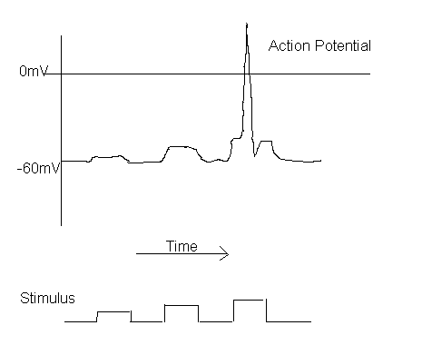
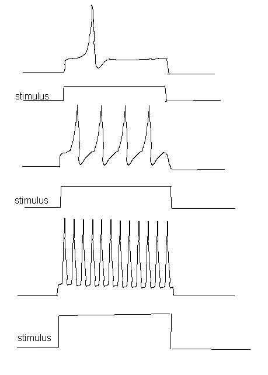

Membrane potential of the neural cell is controlled by the concentration of K+ and Na+. At rest state, the membrane potential is about -50 to -90 mV (this corresponds to very high electric field across the membrane), due to imbalance of ions concentration (K+ ions are mostly inside and Na+ ions are mostly outside).
When the neuron is stimulated (passing current to it) past a threshold, an action potential will be fired ( The conductivity of Na+ ions increases as the membrane potential increases --- leads to a positive feedback loop, as more and more Na+ ions moving inside the membrane).
Action potential

This all-or-none aspect of the action potential have had an important influence on models of neural networks.
Under constant stimulation, neurons behave like voltage-to-frequency converter.

Why use action potential to transmit information?
Why not simply use continuous potential? The axon is long and thin, a continuous electrical signal propagating along the axon decay exponentially (the decay is significant after traveling only a few millimeters).
Action potential solves this problem --- when a patch of axon fires an action potential, the currents cause other nearby patches of membrane to exceed threshold [a highly nonlinear process]. The action potential moves to a new patch of the membrane and travels down the axon by successively "igniting" parts of the membrane. Since the action potential is all or none, it always looks the same [the propagation is much like that of a soliton, or igniting a fuse].